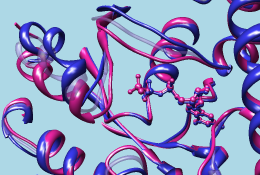

- Model Panel (under General Controls)
- Side View (Viewing Controls)
- MatchMaker (Structure Comparison)
- Match -> Align (Structure Comparison)


In this tutorial, MatchMaker is used to align protein structures (create a superposition) and Match -> Align is used to generate a multiple sequence alignment from the structural superposition. Sequence alignments are displayed in Multalign Viewer, which is covered in more detail in the Sequences and Structures tutorial.
Internet connectivity is required to fetch the structures used in this tutorial: 1tad, 121p, 1r2q, 1j2j, 1puj, 1tnd, 1tag
Protein structures are classified within databases such as SCOP, CATH, and HOMSTRAD. Classifications range from groups of highly similar and closely related proteins to larger, more diverse sets. Depending on what issues are being studied, it may be useful to superimpose structures that are classified together at any level up to fold. Although it is not always clear whether proteins with the same fold are evolutionarily related (homologous), they should still be superimposable. In general, more closely related proteins are easier to superimpose.
G proteins (guanine nucleotide-binding proteins) are used as examples. G proteins are important in signal transduction. They act as molecular switches, changing conformation and interaction partners depending on whether GTP or GDP is bound. Many diverse structures are known. The two main subsets are the small monomeric G proteins, such as Ras, and the larger heterotrimeric G proteins, which act immediately downstream of G-protein-coupled receptors. The α subunits of heterotrimeric G proteins are homologous to the small G proteins.
On Windows/Mac, click the chimera icon; on UNIX, start Chimera from the system prompt:
unix: chimeraA basic Chimera window should appear after a few seconds; resize it as desired. Open the Command Line (Tools... General Controls... Command Line).
Choose Favorites... Add to Favorites/Toolbar to place some icons on the toolbar. This opens the Tools section of the preferences, which recapitulates Chimera's Tools menu. In the On Toolbar column, check the boxes for:
|
|
|
|
Fetch a structure from the Protein Data Bank:
Command: open 1tadThe structure contains three copies of the α subunit of transducin, a heterotrimeric G protein. Delete solvent and two of the copies, chains B and C:
Command: del solventMove and scale the structures using the mouse and Side View as desired throughout the tutorial. The front and back clipping planes can be adjusted in the Side View.
Command: del :.b-c
| superimposed G proteins |
|---|
 |
We will superimpose a sample of G protein structures using MatchMaker, then create a sequence alignment from the superposition with Match -> Align.
The α subunit of the heterotrimeric G protein transducin was already opened in the setup. Fetch structures for the monomeric G proteins H-Ras, Rab5a, and ADP-ribosylation factor 1, respectively:
Command: open 121pUse the ribbons preset:
Command: open 1r2q
Command: open 1j2j
Menu: Presets... Interactive 1 (ribbons)This preset displays not only ribbons, but also bound molecules, ions, and nearby sidechains.
The relative positions of the structures are not meaningful; the next step is to superimpose the proteins so that they can be compared. Start MatchMaker by clicking its icon. This tool superimposes structures pairwise by first aligning their sequences and then fitting the α-carbons of residues in the same columns of the sequence alignment. Usually the fit is iterated so that residue pairs aligned in sequence but far apart in space are not used in the final 3D match.
Several parameters control the sequence alignment step:
The number of α-carbon pairs and RMSD in the final iteration of each pairwise fit are reported in the Reply Log (under Favorites). However, simple visual inspection of the ribbons, although subjective, is often the most useful indicator of success.
Another visual indicator is how well analogous ligands superimpose. Hide all of the atoms and bonds except in residues classified as ligand, and label those residues:
Command: show ligandEach of these structures includes GTP or an analog of GTP in the binding site. However, some other ligands were simply present in the crystallization solution and are not biologically relevant. GOL is glycerol and can be removed:
Command: rlab ligand
Command: del :golTry using different reference structures in MatchMaker (click a line in the Reference structure list, click Apply). With the default alignment parameters, the superposition is similar and basically correct no matter which structure is used as the reference. Detailed examination of the match statistics and guanine nucleotide positions suggests results may be slightly better with 1r2q as the reference.
Command: ~rlab
Next, try a structure that is harder to superimpose:
Command: open 1pujBesides lacking sequence similarity, this protein is circularly permuted compared to the others: its N-terminal part structurally matches the C-terminal part of other G proteins and vice versa.
Menu: Presets... Interactive 1 (ribbons)
Command: show ligand
Command: repr sphere ligand & #4
In the MatchMaker dialog, change the Structure to match to only 1puj and try the others in turn as the reference. Again, ligand positions can be used to help gauge the match.
Trials with the default alignment parameters are not successful. When proteins are very distantly related, it may be useful to switch to a lower-number BLOSUM matrix and/or increase the proportion of secondary structure scoring. Usually a range of parameters will give similar results. For example, with 121p as the reference structure, 1puj can be superimposed as shown in the figure by using any of BLOSUM 30-75 if secondary structure weighting is raised to 90%. Keep in mind that when proteins are very distantly related, their backbones may diverge even in the best possible superposition.
When all five proteins are superimposed to your satisfaction, generate a structure-based alignment of the five sequences using Match -> Align. Although MatchMaker has an option to start this tool (After superposition...), there is no need to re-run the superposition calculation, so just Cancel the MatchMaker dialog. Start Match -> Align separately by clicking its icon.
Match -> Align uses only the distances between α-carbons to create an alignment. Residue types and how the structures were superimposed are not important. All of the A chains should already be chosen in the dialog; the B chain of 1j2j is an unrelated peptide and should not be chosen. Use a cutoff of 5.0 Å, specify Residue aligned in column if within cutoff of [at least one other], and turn on Allow for circular permutation. Click OK to start the calculation.
It may take a minute or two to create the alignment; progress is reported in the status line. When the calculation is finished, the new alignment will be displayed in Multalign Viewer and can be saved to a file from that tool.
Match -> Align can make a multiple sequence alignment, whereas MatchMaker only generates pairwise alignments. Even when there are only two structures, however, the alignment created by Match -> Align after fitting may be better than the initial alignment from MatchMaker, especially if the sequences are dissimilar and hard to align.
The output multiple sequence alignment (example: 5gees.afa) shows that 1puj was correctly recognized as a circular permutation relative to the others. Match -> Align doubled its sequence to allow C-terminal residues (in the first copy of the sequence) to appear before more N-terminal residues (in the second copy) within the alignment.
Keep the sequence alignment, but close most of the structures:
Command: sel :/mavPercentConserved=100Some of the conserved residues are Gly (no sidechain). Clear the selection by Ctrl-clicking in an empty area of the graphics window.
Command: disp sel
(To jump to this section right after performing the setup, open the sequence alignment file 4gees.afa included with this tutorial.)
| GTP-binding switch |
|---|
| (1tagA, 1tndA, morph intermediate) |
|  |
Now we will compare different structures of the same protein, transducin-α:
Command: open 1tndIf Multalign Viewer (the sequence alignment window) is hidden, bring it to the front by choosing MAV - alignment-name... Raise from near the bottom of the Tools menu.
Command: open 1tag
Command: del solvent
In that window, a dashed green line is shown around the sequence name 1tad, chain A to indicate its association with multiple structures. Choose Structure... Match to superimpose the structures using the sequence alignment. One structure (it does not matter which) should be designated as the reference and all three can be designated as the structures to match. Check the option to Iterate by pruning... using a 2.0-Å cutoff and click OK.
Superposition of proteins with the same or nearly the same sequence is generally trivial. We used Multalign Viewer since we already had a sequence alignment, but MatchMaker (or its command equivalent) or the command match could have been used instead. These other methods are used and discussed in the Structure Analysis and Comparison tutorial.
Focus to show the entire structures:
Command: focusTip: Often structures include additional chains that are not associated with the sequence alignment and not needed for the intended analyses. These chains may be additional copies of the same protein or different macromolecules. Here is a trick for removing such unassociated chains:
In this case, all three structures are associated with the 1tad sequence, so the box could be as small as one position in that sequence. Hover the cursor over the residue in the sequence to make sure it is associated with all three structures (the associated structure residues are reported near the bottom of the sequence window).
Command: sel invert
Command: ~sel ligand & ~ sel z<4In other words, deselect ligand/ions within 4 Å of atoms that are already not selected. These commands execute rather slowly because they involve many distance calculations. This step can be omitted if the ligands and ions share IDs with the protein chains to which they are bound, or if you do not care whether they will be deleted.
Command: ~sel ions & ~ sel z<4
Command: del sel
Command: preset apply int 1Open the Model Panel and use the S(hown) checkboxes to view the structures individually.
Command: rlab ligand
Command: focus ligand
The 1tad structure in white represents the activated form of a G protein; even though it includes GDP, the GDP and ALF (AlF4-) residues together mimic the transition state of GTP hydrolysis. 1tnd (magenta) contains the GTP analog GSP and also represents the activated form. The third structure, 1tag (cyan), includes GDP and represents the nonactivated form.
Use the Model Panel checkboxes to show all three structures together. Remove the labels and focus on the overall structures:
Command: ~rlabWhile there is high overall similarity, the nonactive conformation (cyan) differs from the activated ones (white and magenta) in specific areas, termed switch regions.
Command: focus
Multalign Viewer displays lines of information called headers above the sequences in the alignment. By default, a Consensus sequence and Conservation histogram are shown. Use the Headers menu to hide these two and show RMSD. The RMSD histogram shows the root-mean-square distance among the α-carbons (CA atoms) of structure residues associated with each column in the alignment.
The three most prominent "humps" in the RMSD header correspond to the known G protein switch regions at approximately residues 173-183, 195-215, and 227-238 of transducin-α. The third switch region is unique to heterotrimeric G proteins; it is an insertion relative to the monomeric G proteins. Placing the cursor over a position in the 1tad sequence lists the associated structure residues near the bottom of the sequence window, and dragging a box around residues in the sequence alignment selects the associated parts of the structures.
Close 1tad:
Command: close 0The RMSD histogram looks much the same; now it simply shows the CA-CA distances between the two remaining structures.
Finally, morph between the two structures. Morphing involves calculating a series of intermediate structures. In Chimera, the series of structures is treated as a trajectory that can be replayed, saved to a coordinate file, or saved as a movie using MD Movie.
Start the morphing tool:
Command: start Morph ConformationsClick Add... and in the resulting list of models, doubleclick to choose #2, #1, and #2 again, corresponding to a morph trajectory from the nonactivated structure to the activated and back. Close the model list. In the main Morph Conformations dialog, set the Action on Create to hide Conformations, and then click Create.
The progress of the calculation is reported in the status line. When all the intermediate structures have been calculated, the input structures are hidden, the trajectory is opened as model #0, and the MD Movie tool appears.
The trajectory can be played continuously or one step at a time using the buttons on the tool. If the player dialog becomes obscured by other windows, it can be resurrected by choosing MD Movie - trajectory-name... Raise from near the bottom of the Tools menu. If you want to see the original structures again, use the S(hown) checkboxes in the Model Panel.
When you have finished viewing the morph trajectory, choose File... Quit from the menu to exit from Chimera.